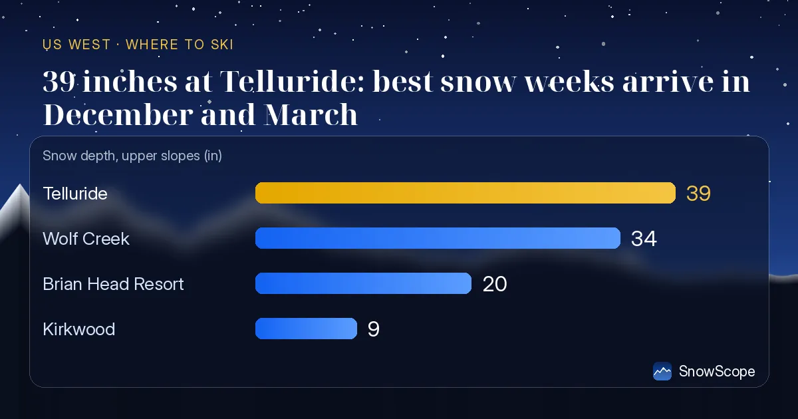

39 inches at Telluride: best snow weeks arrive in December and March
Telluride has the most snow on the US West this week: 39 inches (99 cm) on the upper slopes as of Friday 13 November. The pattern is clear from 46 past winters—late December and March bring the year's best snow, not November. Today we're in the transition.
See the live snow forecast for Telluride in the SnowScope appSnow depth, powder alerts and the 3D map, free.
Today's reading—39 inches high, nothing at the base
At Telluride on Friday 13 November, the upper slopes (3,812 m / 12,507 ft) hold 39 inches (99 cm). Drop to mid-elevation and the picture changes fast. At 3,237 m (10,600 ft), the model shows just 8 inches (20 cm). The base (2,662 m / 8,733 ft) shows nothing yet on the model—the snow doesn't reach that low.
This is classic early season: accumulation sits only at high peaks, bare ground elsewhere. Satellite imagery from Friday confirms snow cover at all these resorts. Across the US West region today, 122 of 195 resorts have snow. By Sunday 16 November, as fresh snow falls, that forecast rises to 136 resorts.
| Resort | Snow depth | New snow, 72 h | Coming, next days | Top |
|---|---|---|---|---|
| Telluride | 39 in (99 cm) | 0 in (0 cm) | 5 in (12 cm) | 12,507 ft (3,812 m) |
| Wolf Creek | 34 in (86 cm) | 0 in (0 cm) | 3 in (7 cm) | 11,762 ft (3,585 m) |
| Brian Head Resort | 20 in (51 cm) | 2 in (4 cm) | 10 in (25 cm) | 10,909 ft (3,325 m) |
| Kirkwood | 9 in (24 cm) | 5 in (13 cm) | 13 in (32 cm) | 9,462 ft (2,884 m) |

Why December and March lead the season
At Telluride mid-elevation (3,237 m), today's 8 inches (20 cm) is deeper than it was on this exact date in 17 of the past 46 winters. That sounds solid, but historically it is not the peak. The best snow weeks from past winters are week 53 (late December), week 11 (mid-March), and week 10 (early March).
Why these weeks, and not now? By late December, two full months of storms have passed. The base layer is thick. The snowpack has bonded. By March, freeze-thaw cycles have made the snow dense and stable. Early November snow is different—it often melts or settles fast because the ground beneath is still warm from summer and absorbs the heat. If you can postpone your trip until mid-December or later, your turns will be safer and longer.
Saturday brings fresh powder, especially in the Sierra
This weekend brings a system that will add powder to the high peaks. On Saturday 14 November, fresh snow will fall across all mountains. At Telluride, the upper slopes should gain 5 inches (12 cm). Wolf Creek adds 3 inches (7 cm). But Kirkwood in the Sierra Nevada is the standout: forecast models show its upper slopes rising 13 inches (32 cm) in one day. Brian Head, Utah, adds 10 inches (25 cm).
The reason is the freezing level. On Saturday, it drops sharply from around 3,000 m (10,000 ft) to below 2,000 m (6,600 ft) through the day, so new snow falls as powder at high elevation instead of arriving as rain or sleet that ruins the base. By Sunday 16 November, regional forecast models predict snow will cover 136 of 195 resorts.
Where to ski—elevation and aspect matter most
Saturday's fresh powder will reward skiers who go high and north-facing. Upper-slope skiers will find newer, fluffier snow. At mid-elevations and on south-facing aspects, the new snow will be thinner and may sit on thin base from earlier storms. Kirkwood and Brian Head, with their larger Saturday snow totals, may offer the best new-snow experience this weekend.
But check the resort website first—early season lift operations and terrain access vary. Avalanche danger today is level 1 (low) according to the Colorado Avalanche Information Center. With fresh snow on Saturday, that may change. Always read the official bulletin before skiing off-piste. Early-season snow often hides rocks and tree wells just 5 or 10 cm below the surface; stick to groomed pistes.
This weekend or wait for mid-December
If you go Saturday, focus on high peaks and north-facing slopes. If you can extend your trip to Sunday 16 November, the new powder will be more stable after settling overnight. That said, if the base looks thin to you in November, your best-value trip comes in mid-December when deep snow sits under new powder, or in March when freeze-thaw has bonded everything together solid. That is when the mountain rewards the effort most.
Tips for skiers
- Ski the highest peaks and north-facing slopes this weekend; snow thins at base elevations
- Check the official avalanche bulletin before any off-piste skiing
- Early-season snow hides rocks and thin coverage: stay on groomed pistes
- Kirkwood and Brian Head get the most fresh snow Saturday; Telluride gets less new powder
- If the base looks thin, wait for mid-December or March when snow depth is better
About these numbers
Resort snow depths are the deepest snow on the resort's upper slopes from the SnowScope snow model (about 1 km, run of 13 November); they are estimates for an area, not a measurement at one point. Station values are measurements on the date shown. Forecasts can change. Always read the official avalanche bulletin before going off-piste.
Official avalanche bulletins: Colorado Avalanche Information Center
Cite this report
For research, teaching or the press: the numbers and charts are free to reuse under CC BY 4.0 with this citation.
SnowScope (2026), 39 inches at Telluride: best snow weeks arrive in December and March, https://snowscope.app/blog/en/2026/11/us-west-where-to-ski-this-weekend-13-november-2026.html, accessed 2026-11-13
SnowScope (Atlas Labs). (2026, November 13). 39 inches at Telluride: best snow weeks arrive in December and March. SnowScope snow reports. https://snowscope.app/blog/en/2026/11/us-west-where-to-ski-this-weekend-13-november-2026.html
BibTeX
@misc{snowscope2026uswestwheretoskithisweek,
author = {{SnowScope (Atlas Labs)}},
title = {39 inches at Telluride: best snow weeks arrive in December and March},
year = {2026},
month = nov,
howpublished = {\url{https://snowscope.app/blog/en/2026/11/us-west-where-to-ski-this-weekend-13-november-2026.html}},
note = {Published 2026-11-13 15:14 UTC; accessed 2026-11-13}
}· CC BY 4.0 · Methods, data and tools →
Telluride: snow and temperature by height, this winter vs last (tools) →
Follow Telluride
Free: a message when fresh snow is coming, and the forecast every morning.
More snow reports

Mt Baker, Washington: about 133 in (337 cm) at the usual peak at mid-mountain in 46 past winters, a world snowfall record, no lodging on the hill, and what that means.

Plan Mammoth Mountain by season: about 93 in (235 cm) at the usual peak at mid-mountain over 46 past winters, March deepest, long springs, and winters that swing.

Big Sky, Montana, made easy to picture: 5,850 acres under Lone Peak, and snow that is about five times deeper near the top than at the base in 46 past winters.